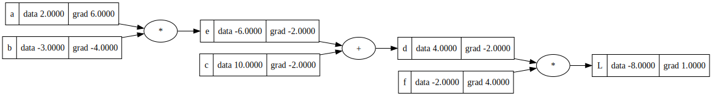
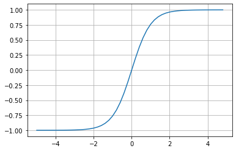
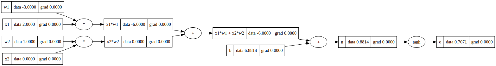
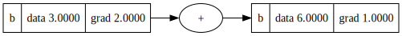
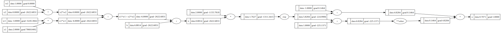

import numpy as np
import matplotlib.pyplot as plt
import mathmicrograd
def f(x):
return 3*x**2 - 4*x + 5f(3.)20.0from graphviz import Digraph
def trace(root):
nodes, edges = set(), set()
def build(v):
if v not in nodes:
nodes.add(v)
for child in v._prev:
edges.add((child, v))
build(child)
build(root)
return nodes, edges
def draw_dot(root, format='svg', rankdir='LR'):
"""
format: png | svg | ...
rankdir: TB (top to bottom graph) | LR (left to right)
"""
assert rankdir in ['LR', 'TB']
nodes, edges = trace(root)
dot = Digraph(format=format, graph_attr={'rankdir': rankdir}) #, node_attr={'rankdir': 'TB'})
for n in nodes:
uid = str(id(n))
dot.node(name=uid, label = "{ %s | data %.4f | grad %.4f}" % (n.label, n.data, n.grad), shape='record')
if n._op:
dot.node(name=str(id(n)) + n._op, label=n._op)
dot.edge(str(id(n)) + n._op, str(id(n)))
for n1, n2 in edges:
dot.edge(str(id(n1)), str(id(n2)) + n2._op)
return dotclass Value:
def __init__(self, data, _children=(), _op='', label=''):
self.data = data
self.grad = 0.0
self._backward = lambda: None
self._prev = set(_children)
self._op = _op
self.label = label
def __repr__(self):
return f"Value(data={self.data})"
def __add__(self, other):
other = other if isinstance(other, Value) else Value(other)
out = Value(self.data + other.data, (self, other), '+')
def _backward():
self.grad += 1.0 * out.grad
other.grad += 1.0 * out.grad
out._backward = _backward
return out
def __mul__(self, other):
other = other if isinstance(other, Value) else Value(other)
out = Value(self.data * other.data, (self, other), '*')
def _backward():
self.grad += other.data * out.grad
other.grad += self.data * out.grad
out._backward = _backward
return out
def __rmul__(self, other): # other * self
return self * other
def __truediv__(self, other): # self / other
return self * other**-1
def __neg__(self): # -self
return self * -1
def __sub__(self, other): # self - other
return self + (-other)
def __radd__(self, other): # other + self
return self + other
def __pow__(self, other):
assert isinstance(other, (int, float)), "only supporting int/float powers for now"
out = Value(self.data ** other, (self, ), f'**other')
def _backward():
self.grad += (other * out.data**(other-1)) * out.grad
out._backward = _backward
return out
def tanh(self):
x = self.data
t = (math.exp(2*x) - 1)/(math.exp(2*x) + 1)
out = Value(t, (self, ), 'tanh')
def _backward():
self.grad += (1 - t**2) * out.grad
out._backward = _backward
return out
def exp(self):
x = self.data
out = Value(math.exp(x), (self, ), 'exp')
def _backward():
self.grad += out.data * out.grad
out._backward = _backward
return out
def backward(self):
topo = []
visited = set()
def build_topo(v):
if v not in visited:
visited.add(v)
for child in v._prev:
build_topo(child)
topo.append(v)
build_topo(self)
self.grad = 1.0
for node in reversed(topo):
node._backward()a = Value(2., label = 'a')
b = Value(-3., label = 'b')
c = Value(10., label = 'c')
e = a*b; e.label = 'e'
d = e + c; d.label = 'd'
f = Value(-2., label='f')
L = d * f; L.label = 'L'
LValue(data=-8.0)Value(1) + 2Value(data=3)def lol():
h = 0.001
a = Value(2.0, label='a')
b = Value(-3.0, label='b')
c = Value(10.0, label='c')
e = a*b; e.label = 'e'
d = e + c; d.label = 'd'
f = Value(-2.0, label='f')
L = d * f; L.label = 'L'
L1 = L.data
a = Value(2.0, label='a')
b = Value(-3.0, label='b')
b.data += h
c = Value(10.0, label='c')
e = a*b; e.label = 'e'
d = e + c; d.label = 'd'
f = Value(-2.0, label='f')
L = d * f; L.label = 'L'
L2 = L.data
print((L2 - L1)/h)
lol()-3.9999999999995595d._prev, d._op({Value(data=-6.0), Value(data=10.0)}, '+')L.grad = 1.
f.grad = 4.
d.grad = -2c.grad = -2.
e.grad = -2.a.grad = 6.
b.grad = -4.draw_dot(L)
plt.plot(np.arange(-5,5,0.2), np.tanh(np.arange(-5,5,0.2))); plt.grid();
# inputs x1,x2
x1 = Value(2.0, label='x1')
x2 = Value(0.0, label='x2')
# weights w1,w2
w1 = Value(-3.0, label='w1')
w2 = Value(1.0, label='w2')
# bias of the neuron
b = Value(6.8813735870195432, label='b')
# x1*w1 + x2*w2 + b
x1w1 = x1*w1; x1w1.label = 'x1*w1'
x2w2 = x2*w2; x2w2.label = 'x2*w2'
x1w1x2w2 = x1w1 + x2w2; x1w1x2w2.label = 'x1*w1 + x2*w2'
n = x1w1x2w2 + b; n.label = 'n'
o = n.tanh(); o.label = 'o'draw_dot(o)
o.backward()a = Value(3.0, label='b')
b = a + a; b.label = 'b'
b.backward()
draw_dot(b)
# inputs x1,x2
x1 = Value(2.0, label='x1')
x2 = Value(0.0, label='x2')
# weights w1,w2
w1 = Value(-3.0, label='w1')
w2 = Value(1.0, label='w2')
# bias of the neuron
b = Value(6.8813735870195432, label='b')
# x1*w1 + x2*w2 + b
x1w1 = x1*w1; x1w1.label = 'x1*w1'
x2w2 = x2*w2; x2w2.label = 'x2*w2'
x1w1x2w2 = x1w1 + x2w2; x1w1x2w2.label = 'x1*w1 + x2*w2'
n = x1w1x2w2 + b; n.label = 'n'
# ----
e = (2*n).exp()
o = (e - 1) / (e + 1)
# ----
o.label = 'o'
o.backward()
draw_dot(o)
(2*n).exp()Value(data=5.828427124746192)Value(10)**2Value(data=100)import torchx1 = torch.Tensor([2.0]).double() ; x1.requires_grad = True
x2 = torch.Tensor([0.0]).double() ; x2.requires_grad = True
w1 = torch.Tensor([-3.0]).double() ; w1.requires_grad = True
w2 = torch.Tensor([1.0]).double() ; w2.requires_grad = True
b = torch.Tensor([6.8813735870195432]).double() ; b.requires_grad = True
n = x1*w1 + x2*w2 + b
o = torch.tanh(n)
print(o.data.item())
o.backward()
print('---')
print('x2', x2.grad.item())
print('w2', w2.grad.item())
print('x1', x1.grad.item())
print('w1', w1.grad.item())0.7071066904050358
---
x2 0.5000001283844369
w2 0.0
x1 -1.5000003851533106
w1 1.0000002567688737o.datatensor([0.7071], dtype=torch.float64)import randomclass Neuron:
def __init__(self, nin):
self.w = [Value(random.uniform(-1,1)) for _ in range(nin)]
self.b = Value(random.uniform(-1,1))
def __call__(self, x):
# w * x + b
act = sum((wi*xi for wi, xi in zip(self.w, x)), self.b)
out = act.tanh()
return out
def parameters(self):
return self.w + [self.b]
class Layer:
def __init__(self, nin, nout):
self.neurons = [Neuron(nin) for _ in range(nout)]
def __call__(self, x):
outs = [n(x) for n in self.neurons]
return outs[0] if len(outs) == 1 else outs
def parameters(self):
return [p for neuron in self.neurons for p in neuron.parameters()]
class MLP:
def __init__(self, nin, nouts):
sz = [nin] + nouts
self.layers = [Layer(sz[i], sz[i+1]) for i in range(len(nouts))]
def __call__(self, x):
for layer in self.layers:
x = layer(x)
return x
def parameters(self):
return [p for layer in self.layers for p in layer.parameters()]x = [2.0, 3.0, -1.0]
n = MLP(3, [4, 4, 1])
n(x)Value(data=-0.8518646845522475)len(n.parameters())41xs = [
[2.0, 3.0, -1.0],
[3.0, -1.0, 0.5],
[0.5, 1.0, 1.0],
[1.0, 1.0, -1.0],
]
ys = [1.0, -1.0, -1.0, 1.0] # desired targetsypred = [n(x) for x in xs]
loss = sum((yout - ygt)**2 for ygt, yout in zip(ys, ypred))
lossValue(data=8.195423138300107)ypred = [n(x) for x in xs]
loss = sum((yout - ygt)**2 for ygt, yout in zip(ys, ypred))
lossValue(data=8.195423138300107)loss.backward()for p in n.parameters():
p.data += -0.01 * p.gradypred[Value(data=-0.8518646845522475),
Value(data=0.12883393385135233),
Value(data=-0.5205839755359478),
Value(data=-0.8060771173128451)]for k in range(200):
# forward pass
ypred = [n(x) for x in xs]
loss = sum((yout - ygt)**2 for ygt, yout in zip(ys, ypred))
# backward pass
for p in n.parameters():
p.grad = 0.0
loss.backward()
# update
for p in n.parameters():
p.data += -0.1 * p.grad
print(k, loss.data)0 7.9987601054344974
1 7.998768254319929
2 7.998776289198453
3 7.998784212518286
4 7.998792026656887
5 7.998799733923519
6 7.998807336561709
7 7.99881483675159
8 7.998822236612142
9 7.9988295382033545
10 7.998836743528274
11 7.998843854534988
12 7.99885087311851
13 7.998857801122596
14 7.9988646403414805
15 7.998871392521546
16 7.99887805936293
17 7.998884642521051
18 7.998891143608089
19 7.998897564194406
20 7.998903905809901
21 7.998910169945322
22 7.998916358053519
23 7.998922471550658
24 7.998928511817379
25 7.998934480199918
26 7.99894037801118
27 7.998946206531777
28 7.9989519670110205
29 7.998957660667887
30 7.998963288691943
31 7.998968852244227
32 7.998974352458117
33 7.998979790440156
34 7.998985167270847
35 7.998990484005422
36 7.998995741674587
37 7.999000941285239
38 7.999006083821148
39 7.999011170243634
40 7.9990162014922035
41 7.999021178485171
42 7.999026102120268
43 7.999030973275209
44 7.999035792808263
45 7.999040561558786
46 7.999045280347749
47 7.999049949978248
48 7.99905457123598
49 7.999059144889733
50 7.999063671691822
51 7.999068152378555
52 7.999072587670647
53 7.999076978273633
54 7.999081324878281
55 7.9990856281609695
56 7.99908988878407
57 7.999094107396307
58 7.9990982846331145
59 7.999102421116978
60 7.999106517457763
61 7.999110574253039
62 7.9991145920883895
63 7.999118571537715
64 7.999122513163526
65 7.999126417517225
66 7.999130285139385
67 7.999134116560015
68 7.999137912298817
69 7.999141672865441
70 7.999145398759733
71 7.99914909047196
72 7.999152748483052
73 7.999156373264821
74 7.999159965280181
75 7.999163524983352
76 7.99916705282007
77 7.999170549227792
78 7.999174014635873
79 7.9991774494657735
80 7.999180854131225
81 7.999184229038425
82 7.999187574586189
83 7.999190891166139
84 7.999194179162857
85 7.99919743895404
86 7.999200670910663
87 7.999203875397127
88 7.999207052771402
89 7.999210203385175
90 7.999213327583982
91 7.999216425707352
92 7.999219498088927
93 7.999222545056597
94 7.999225566932631
95 7.999228564033784
96 7.999231536671427
97 7.9992344851516535
98 7.9992374097753975
99 7.999240310838541
100 7.999243188632027
101 7.999246043441947
102 7.999248875549657
103 7.999251685231876
104 7.9992544727607715
105 7.999257238404061
106 7.999259982425107
107 7.9992627050829945
108 7.999265406632628
109 7.99926808732482
110 7.999270747406354
111 7.99927338712009
112 7.999276006705024
113 7.999278606396377
114 7.999281186425669
115 7.99928374702078
116 7.999286288406042
117 7.999288810802287
118 7.999291314426934
119 7.999293799494042
120 7.999296266214385
121 7.999298714795511
122 7.999301145441796
123 7.999303558354529
124 7.999305953731936
125 7.99930833176927
126 7.999310692658851
127 7.999313036590123
128 7.99931536374971
129 7.999317674321473
130 7.999319968486549
131 7.999322246423416
132 7.999324508307934
133 7.999326754313392
134 7.999328984610566
135 7.999331199367747
136 7.999333398750801
137 7.999335582923215
138 7.99933775204612
139 7.999339906278356
140 7.999342045776506
141 7.9993441706949255
142 7.999346281185799
143 7.999348377399164
144 7.99935045948296
145 7.99935252758306
146 7.999354581843308
147 7.999356622405555
148 7.999358649409688
149 7.999360662993675
150 7.999362663293588
151 7.999364650443644
152 7.999366624576229
153 7.9993685858219346
154 7.9993705343095876
155 7.9993724701662785
156 7.9993743935173915
157 7.999376304486636
158 7.999378203196072
159 7.9993800897661345
160 7.999381964315667
161 7.9993838269619495
162 7.999385677820711
163 7.99938751700617
164 7.999389344631057
165 7.999391160806628
166 7.999392965642702
167 7.999394759247677
168 7.999396541728552
169 7.999398313190958
170 7.999400073739171
171 7.999401823476137
172 7.999403562503496
173 7.999405290921597
174 7.999407008829529
175 7.999408716325124
176 7.999410413504997
177 7.999412100464545
178 7.999413777297985
179 7.999415444098361
180 7.999417100957562
181 7.9994187479663506
182 7.999420385214364
183 7.999422012790147
184 7.9994236307811555
185 7.999425239273788
186 7.99942683835339
187 7.99942842810427
188 7.999430008609728
189 7.999431579952053
190 7.999433142212552
191 7.9994346954715585
192 7.999436239808448
193 7.999437775301655
194 7.999439302028684
195 7.999440820066123
196 7.999442329489664
197 7.999443830374101
198 7.999445322793363
199 7.99944680682051